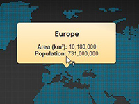

Drawing tooltip using NGUI

Example of drawing tooltips using NGUI.
Usage instructions:
Add this script to map GameObject, specify prefab and container, and start the scene.
Tooltips of the markers are displayed using NGUI.
Add this script to map GameObject, specify prefab and container, and start the scene.
Tooltips of the markers are displayed using NGUI.
NGUICustomTooltipExample.cs
/* INFINITY CODE 2013-2019 */
/* http://www.infinity-code.com */
#if NGUI
using UnityEngine;
namespace InfinityCode.OnlineMapsExamples
{
[AddComponentMenu("Infinity Code/Online Maps/Examples (API Usage)/uGUICustomTooltipExample")]
public class NGUICustomTooltipExample : MonoBehaviour
{
public GameObject tooltipPrefab;
public GameObject container;
private GameObject tooltip;
private UIWidget widget;
private UILabel label;
// Use this for initialization
private void Start ()
{
OnlineMapsMarkerBase.OnMarkerDrawTooltip = delegate { };
OnlineMaps.instance.AddMarker(Vector2.zero, "Hello World");
OnlineMaps.instance.OnUpdateLate += OnUpdateLate;
}
private void OnUpdateLate()
{
OnlineMapsMarkerBase tooltipMarker = OnlineMaps.instance.tooltipMarker;
if (tooltipMarker != null && !string.IsNullOrEmpty(tooltipMarker.label))
{
if (tooltip == null)
{
tooltip = Instantiate(tooltipPrefab) as GameObject;
tooltip.transform.parent = container.transform;
tooltip.transform.localScale = Vector3.one;
widget = tooltip.GetComponent<UIWidget>();
label = widget.GetComponentInChildren<UILabel>();
}
Vector2 screenPosition = OnlineMapsControlBase.instance.GetScreenPosition(tooltipMarker.position);
float ratio = (float)widget.root.activeHeight / Screen.height;
float width = Mathf.Ceil(Screen.width * ratio);
screenPosition.x = (screenPosition.x / Screen.width - 0.5f) * width;
screenPosition.y = (screenPosition.y / Screen.height - 0.5f) * widget.root.activeHeight;
label.text = tooltipMarker.label;
Vector2 buttonOffset = new Vector2(-widget.width / 2, widget.height);
widget.SetRect(screenPosition.x + buttonOffset.x, screenPosition.y + buttonOffset.y, widget.width, widget.height);
}
else if (tooltip != null)
{
OnlineMapsUtils.Destroy(tooltip);
tooltip = null;
}
}
}
}
#endif